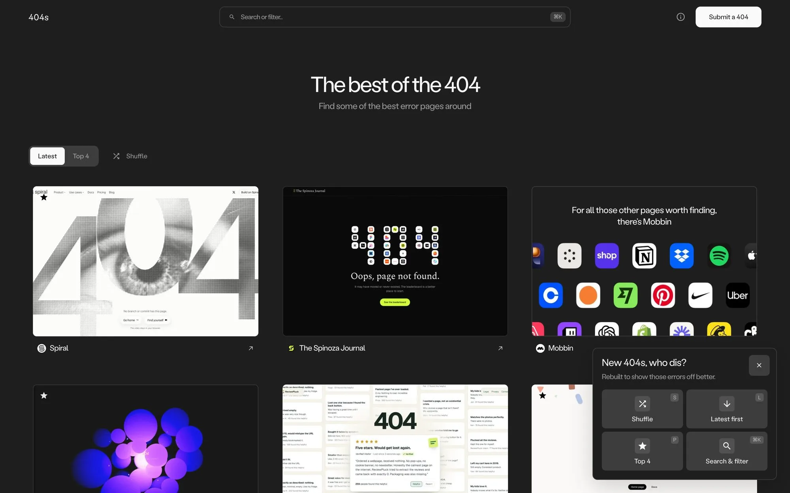

404s
- Каталог
- Эксперименты и спецпроекты
- Интерактив
- Дизайнерам
- Разработчикам
- Минимализм
- Редакционный
- Тёмная тема
- Нейтральный фон
- Ломаная сетка
- Тёмная тема по умолчанию
- Микроанимации
- Astro
- Fathom Analytics
- Английский язык
- Действующий сайт

Что это
404s — тёмная галерея дизайнерских страниц ошибки 404. Сверху поиск и кнопка Submit a 404, ниже — карточки реальных сайтов с фильтрами по стилю, взаимодействию и индустрии. Можно листать последние, лучшие и случайные примеры; у каждой карточки указан автор и ссылка на живую страницу. Онлайн-галерея с оригинальными примерами оформления страницы ошибки 404.
Что смотреть в первую очередь
Смотреть карточки Spiral и The Spinoza Journal, переключатель Shuffle и форму Submit a 404.
Приёмы
- Ломаная сетка
- Тёмная тема по умолчанию
- Микроанимации
Интересные факты
- Тёмная галерея открывается заголовком «The best of the 404» и строкой поиска с подсказкой ⌘K.
- Сверху — кнопка Submit a 404; рядом переключатели Latest, Top 4 и Shuffle.
- Карточки показывают реальные страницы ошибок: Spiral, The Spinoza Journal, Mobbin и десятки других, с именем автора и ссылкой.
- Архив большой: записи с 2024 по 2026 год, фильтры по стилю, взаимодействию и индустрии.
- Внизу — шутливое «New 404s, who dis?» и форма отправки новой страницы с полями сайта, URL, дизайнера и контактов.
- Собрано на Astro, аналитика — Fathom; у карточек есть клавиатурная навигация и горячие клавиши.
Паспорт
- Домен
- 404s.design
- Тип сайта
- Каталог
- Категории
- Эксперименты и спецпроекты
- Подкатегории
- Интерактив
- Для кого
- Дизайнерам, Разработчикам
- Стиль
- Минимализм, Редакционный
- Язык
- Английский
- Страна
- не указано
- Автор
- не указано
- Год
- не указано
- Добавлен в коллекцию
- 21.11.2026
Палитра
-
#1C1C1C— 73% кадра -
#F8F7F5— 14% кадра -
#3D3D3D— 4% кадра -
#D2D2D1— 2% кадра -
#B0B0AE— 1% кадра
- Режим
- Тёмная
- Цвет фона
- Нейтральный
Технологии
- Astro
- Fathom Analytics